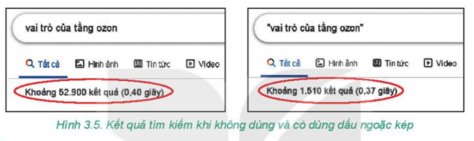
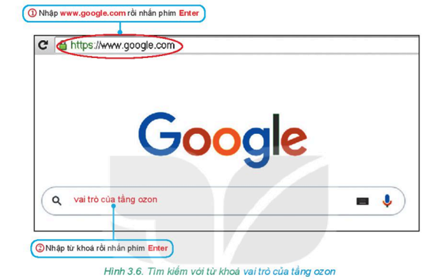
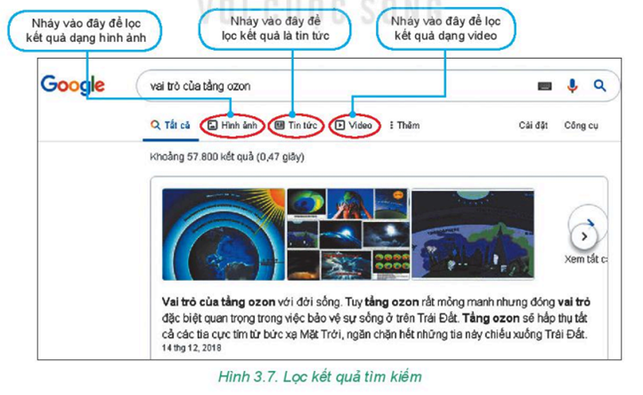

- Tìm kiếm thông tin là một trong các dịch vụ phổ biến của Internet.
- Người sử dụng có thể tìm kiếm thông tin trên Internet bằng cách dùng chức năng của một số website đặc biệt gọi là máy tìm kiếm (search engine). Có nhiều máy tìm kiếm như WWW.yahoo.com, www.google.com, www.bing.com, COCCOC.com....
- Nhìn chung, cách dùng các máy tìm kiếm tương tự như nhau.
- Nhờ máy tìm kiếm, người sử dụng dễ dàng tìm được thông tin dựa vào các từ khoá. Kết quả tìm kiếm là danh sách liên kết trỏ đến các trang web có chứa từ khoá đó.
- Internet là xa lộ thông tin giống như đường cao tốc nên khi sử dụng cần phải tuân thủ một số quy định của pháp luật.
- Trên Internet có thông tin bổ ích và có cả thông tin độc hại, Vì vậy, em cần hỏi ý kiến bố mẹ trước khi truy cập Internet.
- Không cung cấp thông tin cá nhân khi truy cập Internet.
* Từ khoá là một từ hoặc cụm từ liên quan đến nội dung cần tìm kiếm do người sử dụng cung cấp.
- Chọn từ khoá phù hợp sẽ giúp cho việc tìm kiếm đạt hiệu quả.
- Có thể đặt từ khoá trong dấu ngoặc kép (" ") để thu hẹp phạm vị tìm kiếm.
- Ví dụ: Để tìm kiếm thông tin về vai trò của tầng ozon, nếu ta nhập từ khoá vai trò của tầng ozon thì kết quả sẽ là danh sách với số lượng rất nhiều các liên kết. Còn nếu ta nhập từ khoá “vai trò của tầng ozon”, kết quả hiển thị là danh sách với số lượng các liên kết ít hơn.
- Có thể dùng dấu cộng (+) hoặc trừ (-) để thêm hoặc bột từ khoả (gia tăng hoặc thu hẹp phạm vi tìm kiếm thông tin).
→ World Wide Web (W ) là mạng thông tin toàn cầu, liên kết các website trên Internet.→ Máy tìm kiếm là một website đặc biệt, giúp người sử dụng tìm kiếm thông tin trên Internet một cách nhanh chóng, hiệu quả thông qua các từ khoá. • Kết quả tìm kiếm là danh sách các liên kết. Các liên kết có thể là văn bản, hình ảnh hoặc video.
→ Từ khoá tìm kiếm rất quan trọng. Lựa chọn từ khoá phù hợp sẽ giúp tìm kiếm thông tin nhanh và chính xác.
Nhiệm vụ: Tìm kiếm thông tin và hình minh hoạ về vai trò của tầng ozon.
(Các hướng dẫn sau đây sử dụng máy tìm kiếm www.google.com để minh hoạ.)
- Thực hiện tìm kiếm lần lượt với từ khoá vai trò của tầng ozon và từ khoá vai trò của tầng ozon”. Các kết quả tìm kiếm được hiển thị dưới dạng danh sách liên kết. So sánh hai kết quả tìm được.
- Lưu ý: Các trang web có nội dung liên quan nhất đến từ khoá thường xuất hiện ở đầu danh sách kết quả. Em cần chọn lọc những thông tin chính xác, phù hợp để sử dụng.
- Nháy chuột vào một liên kết dạng tin tức để xem nội dung và sao chép thông tin dạng văn bản về máy tính.
- Chọn nội dung cần sao chép, nhấn tổ hợp phím Ctrl + C.
- Mở tệp văn bản, nhấn tổ hợp phím Ctrl + V.
- Nháy chuột vào một liên kết dạng hình ảnh để xem và lưu về máy tính.
- Nháy nút phải chuột vào hình ảnh trên trang web, xuất hiện bảng chọn tắt, chọn lệnh Lưu hình ảnh thành... để lưu hình ảnh thành tập trên máy tính.